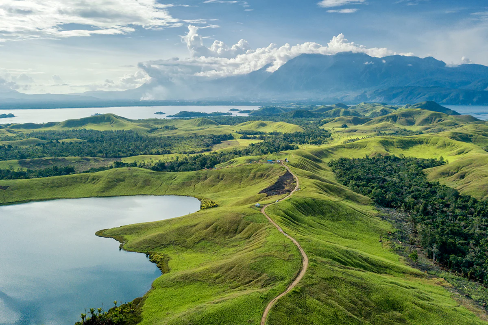

About West Papua
Capital City in Manokwari
West Papua: A Land of Natural Wonders and Cultural Riches
West Papua, located in the western half of New Guinea, is a province of Indonesia brimming with natural wonders and rich cultural heritage. From its biodiverse rainforests and stunning coastal landscapes to its diverse indigenous communities, West Papua offers a unique and captivating experience.
Natural Wonders:
- Biodiversity Hotspot: West Papua is part of the world's second-largest island and boasts incredibly diverse ecosystems. Lush rainforests, towering mountains, coastal mangroves, and pristine coral reefs support a vast array of plant and animal life, many of which are found nowhere else on Earth.
- Raja Ampat: This archipelago, located off the coast of West Papua, is renowned as a global epicenter of marine biodiversity. Its stunning underwater landscapes, vibrant coral reefs, and diverse marine life make it a world-class diving and snorkeling destination.
- Arfak Mountains: These mountains offer breathtaking scenery, unique flora and fauna, and opportunities for trekking and birdwatching. They are also home to several indigenous communities with rich cultural traditions.
Cultural Riches:
- Diverse Indigenous Communities: West Papua is home to numerous indigenous groups, each with its own distinct languages, customs, and traditions. These communities have a deep connection to the land and maintain rich cultural practices.
- Traditional Arts and Crafts: Traditional arts and crafts, such as wood carving, weaving, and bark painting, are important expressions of West Papuan culture. These crafts often depict symbolic motifs and ancestral stories.
- Unique Cultural Practices: Various ceremonies and rituals are performed to mark important life events and maintain connections with ancestors and the natural world.
Historical Context:
- Influence: West Papua has a history of colonial influence, having been under Dutch control before becoming part of Indonesia.
- Integration with Indonesia: After a period of transition, West Papua officially became part of Indonesia in the 1960s.
Challenges and Opportunities:
- Sustainable Development: Balancing economic development with environmental conservation and the rights of indigenous communities is a crucial challenge.
- Ecotourism Potential: The region's natural beauty and cultural richness offer significant potential for sustainable ecotourism, which can benefit both the local communities and the environment.
West Papua Today: West Papua is a region of immense natural beauty and cultural significance. It is a place where ancient traditions meet the challenges of the modern world, offering a unique and invaluable contribution to Indonesia's cultural and natural heritage.

West Papua: A Journey Through History, Culture, and Traditions
West Papua, the western part of the island of New Guinea, is a land of extraordinary biodiversity and rich cultural heritage. Its history is intertwined with the stories of diverse indigenous groups who have inhabited this land for millennia. This brief overview explores the origins, traditions, and cultural aspects of West Papua:
Early History and Origins
Ancient Inhabitants: Archaeological evidence suggests that humans have inhabited New Guinea for at least 40,000 years. The ancestors of present-day Papuans likely migrated from Southeast Asia during various periods.
Linguistic Diversity: West Papua is one of the most linguistically diverse regions in the world, with hundreds of different languages spoken. This diversity reflects the long history of independent cultural development within different communities.
Pre-Colonial Era: Before European contact, West Papua was characterized by complex social structures based on tribal affiliations, kinship systems, and customary law. Trade networks existed between different communities, both within the island and with neighboring islands.
Colonial Period
Dutch Influence: The Dutch began to assert control over western New Guinea in the 19th century, incorporating it into the Dutch East Indies.
World War II: During World War II, New Guinea became a significant battleground between Allied and Japanese forces.
Post-War Transition: After the war, the Netherlands retained control of western New Guinea, but Indonesia began to assert its claim to the territory.
Integration with Indonesia
Act of Free Choice (Pepera): In 1969, the Act of Free Choice (Pepera) was conducted, a controversial process in which a limited number of Papuan representatives voted in favor of integration with Indonesia.
Special Autonomy: In 2001, Indonesia granted special autonomy status to Papua (which at that time included both present-day Papua and West Papua provinces), aiming to address concerns about political, economic, and cultural rights.
Cultural Traditions and Indigenous Groups
Diverse Ethnic Groups: West Papua is home to numerous ethnic groups, including the Dani, Arfak, Meyakh, and many others. Each group has its own distinct language, customs, and traditions.
Traditional Arts and Crafts: Wood carving, weaving, bark painting, and body ornamentation are important forms of artistic expression. These crafts often depict symbolic motifs related to nature, ancestors, and mythology.
Ceremonies and Rituals: Elaborate ceremonies and rituals are performed to mark important life events, maintain social harmony, and honor ancestors. These events often involve music, dance, and traditional attire.
Traditional Houses: Traditional houses vary depending on the region and ethnic group. Some examples include the "Honai" (round houses) of the Dani people and the stilt houses found in coastal areas.
Challenges and Current Issues
Development and Inequality: West Papua faces challenges related to economic development, access to healthcare and education, and social inequality.
Environmental Concerns: Deforestation, mining activities, and other environmental issues pose threats to the region's unique biodiversity.
Human Rights: Concerns about human rights violations and the rights of indigenous communities continue to be a significant issue.
West Papua Today
West Papua is a region of immense cultural and natural significance. Understanding its history, traditions, and the challenges it faces is crucial for promoting sustainable development, cultural preservation, and social justice.